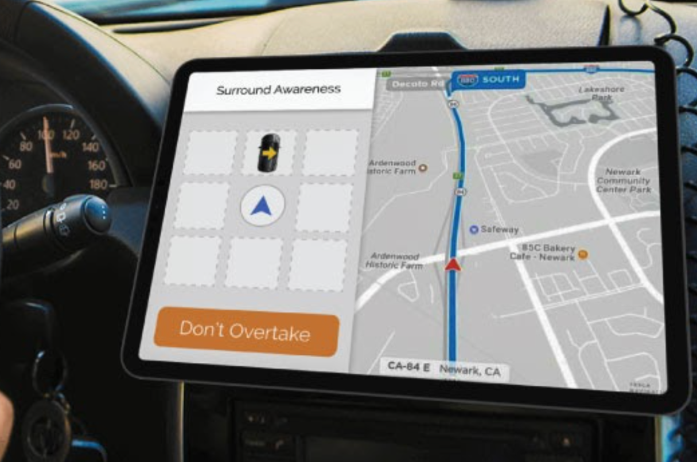
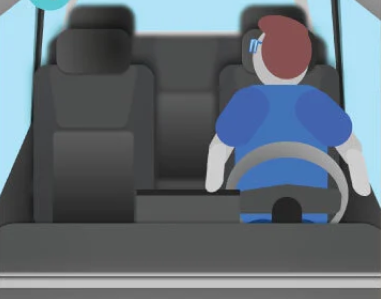
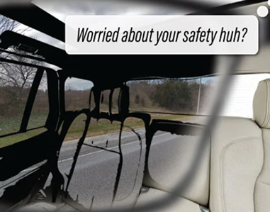
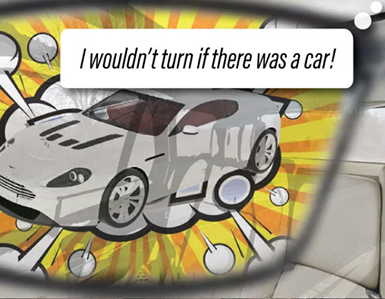
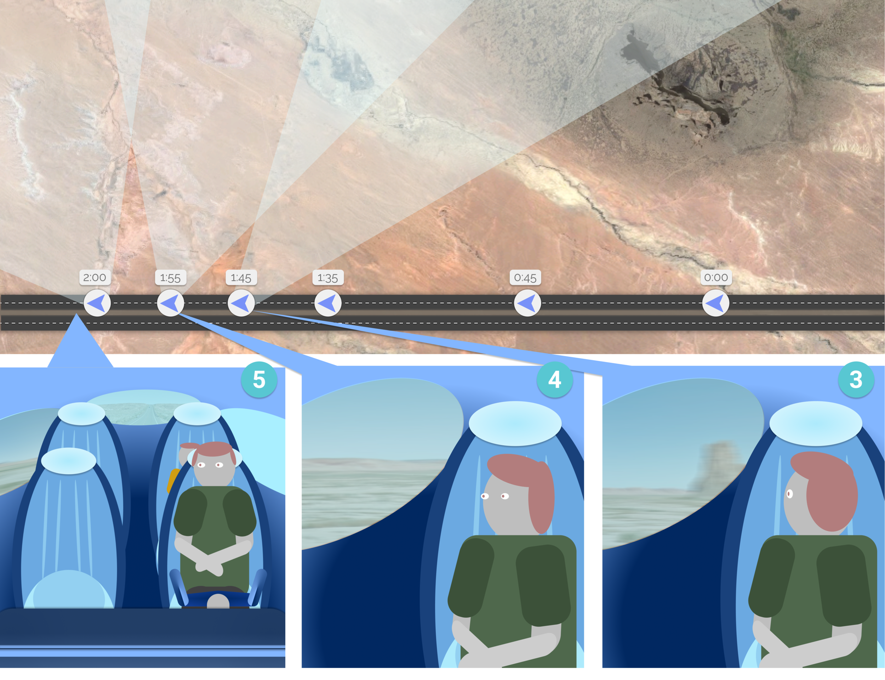
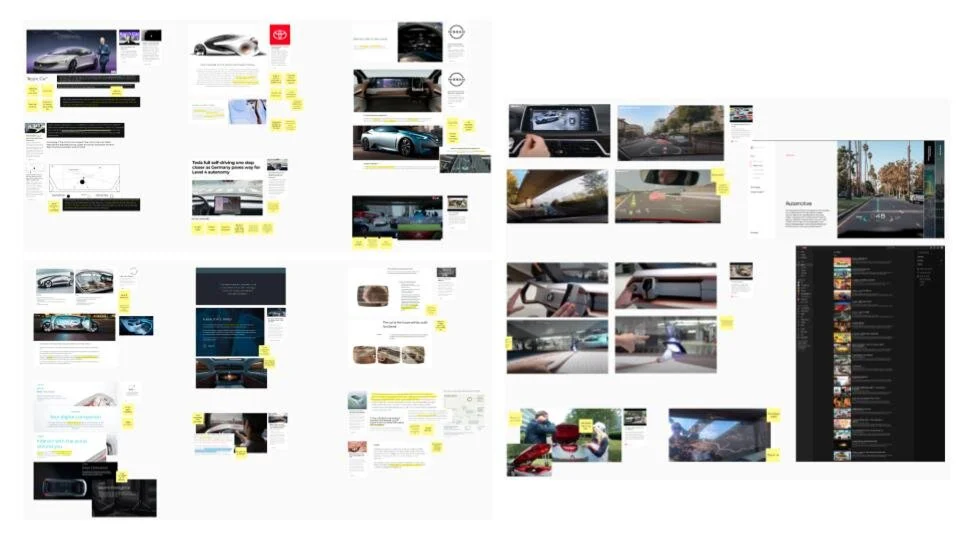
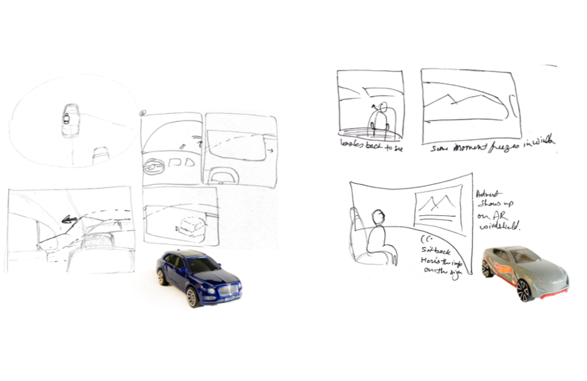
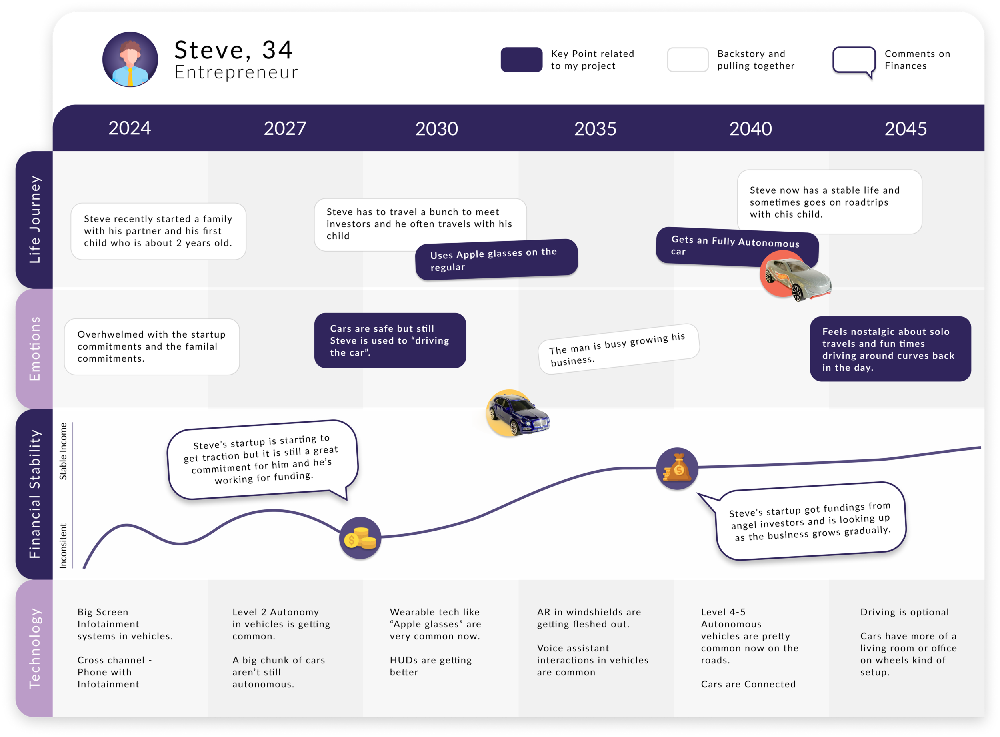

Future Automobile Interactions
Senior-year capstone in my interaction design specialization at Purdue. Open prompt, I picked automotive because I wanted a real interaction problem and I like driving. Twelve weeks, solo.
The framework was somaesthetics, how bodies build habits and how perception gets retrained. Both scenarios came out of that.
Where it started, and why it turned speculative
The idea came from an ordinary frustration: getting tailgated on a road trip with no idea what the car behind me actually wanted. My first instinct was car-to-car communication, some way for a vehicle to signal its intent to whoever was near it. Early feedback pushed back on that as too narrow, and too tied to real safety and ergonomics constraints for a twelve-week solo project.
I moved the whole thing into a speculative space instead, which freed me from those constraints and let me ask a bigger question: what happens to the small habits a driver has already built, once the car stops needing them. I scoped two interactions along a deliberate arc: near future in 2035 aimed at earning trust, far future in 2045 aimed at play, so the second built on ground the first had already covered.


2035: the blind-spot glance
A driver in a Level 3 autonomous car still turns their head to check the blind spot. Twenty years of muscle memory doesn't turn off just because the car can see better than they can.
So the AR glasses render through the car body and answer the glance directly. There's a small joke built into it too: if the driver turns to check a spot that's actually clear, a fake car briefly appears and then pops out of existence, the glasses' way of saying "you wouldn't have turned if there'd been a car there." Same habit, just given something true to look at.



The diorama built to walk through the blind-spot sequence: model cars, paper roads, AR glasses overlays taped down by hand.
The playful "poof" got mixed reactions when I showed it around: some people read the mocking tone as mean rather than funny.
I kept the mechanic and adjusted the delivery so it reads as a shared laugh. Small change, same idea.
2045: reflecting in the moment
2045 looks further out: a fully autonomous car whose windows are AR displays. If a passenger turns to look at something going by, say a parent pointing something out to their kid, the window freezes that frame so they can keep talking about it without it sliding out of view.
When they turn back to face forward, the window speeds the frame back up to catch real time. The idea was to protect a small, ordinary moment, a parent and a kid noticing something together, from a car that would otherwise just keep moving.


Reflect in the moment, then catch back up: the AR window holds the frame while the conversation runs, then speeds up to real time once the passenger turns back.
How I got there
The research was mostly reference-gathering. I looked at concept cars from Toyota, BMW, Renault, and Mercedes, and pulled from film, iRobot, Blade Runner, Minority Report, for how they staged people inside autonomous vehicles. I also watched a lot of plain driving footage on YouTube, just to see how people actually move their heads and bodies in a car.
I prototyped physically, model cars, paper roads, AR overlays taped down by hand, and built a persona journey, a 34-year-old entrepreneur named Steve, mapped across emotion, financial stability, and technology adoption from 2024 to 2045, to keep both scenarios grounded in one person's life.


The research board (concept cars and film references) and early sketches moving from screen-based ideas toward the two physical prototypes.
